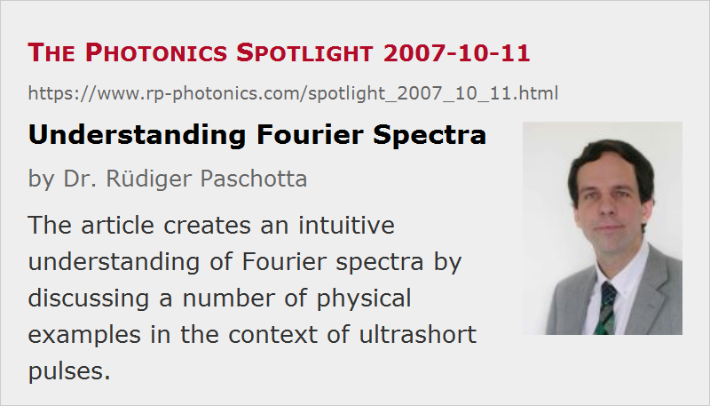

Understanding Fourier Spectra
Posted on 2007-10-11 as a part of the Photonics Spotlight (available as e-mail newsletter!)
Permanent link: https://www.rp-photonics.com/spotlight_2007_10_11.html
Author: Dr. Rüdiger Paschotta, RP Photonics Consulting GmbH
Abstract: The article creates an intuitive understanding of Fourier spectra by discussing a number of physical examples in the context of ultrashort pulses.

This article was originally a part of the Encyclopedia of Laser Physics and Technology, but as its general approach and its style did not quite match that environment, I decided to present this material as an article of the Photonics Spotlight. This is the very rare case that an encyclopedia article is removed; the old URL is redirected to this spotlight article.
Fourier transforms are a widely used tool in the area of optics, as they are in the context of other wave phenomena. This article is a didactical exercise illustrating temporal Fourier spectra, while the article on beam divergence gives an example for the use of spatial Fourier transforms. The primary objective is to create an intuitive understanding of Fourier spectra by demonstrating their close relationship with elementary physical effects. Within the encyclopedia, the topic is mainly seen in the context of ultrashort pulses as generated in mode-locked lasers.
Spectrum of a Single Pulse
We consider a simple case, where a pulse is formed by multiplying a sinusoidal function with a Gaussian envelope function:
This describes the (real) electric field E vs time t, where the oscillation frequency is ν0, the oscillation phase φ, and the full width at half maximum (FWHM) pulse duration (defined for the intensity profile, proportional to the squared modulus of E) is τ.
The continuous Fourier transform (named after the French mathematician and physicist Jean Baptiste Joseph Fourier) is defined as
(according to the electrical engineering convention), and the Fourier spectrum is usually identified with this function. Its squared modulus is the intensity spectrum or power spectrum (→ power spectral density), and its phase is called the spectral phase.
It is well known that the intensity spectrum of a Gaussian pulse as defined above is also Gaussian, and that the time–bandwidth product (i.e., the product of full width half maximum in time and frequency domain) is ≈0.44. This means that the shorter such a pulse is, the broader is its spectrum.
It is instructive to recall that the example pulse was generated from an underlying sinusoidal function. The instantaneous frequency of this pulse is thus constant at the value ν0, if φ is assumed to be constant. For that reason, one might expect that the “real” spectral width is zero, because only a single frequency is involved. From this perspective, one might perceive the finite width of the Fourier spectrum as a kind of mathematical artifact.
However, a closer inspection reveals the intimate relationship of the Fourier transform with physical reality. For that purpose, one has to consider a concrete physical realization of spectral analysis, rather than mathematical equations only. In the following “Gedankenexperiment” (imagined experiment), we probe the spectral content of the pulse at a certain frequency ν, by exposing a narrow-linewidth oscillator to the pulse. We adjust the resonance frequency of the oscillator to the value ν, and assume that the damping time is significantly longer than the pulse duration. We first bring the oscillator to rest, then expose it to the pulse, and then measure the oscillator's amplitude. It turns out that this amplitude is just proportional to the corresponding amplitude in the Fourier spectrum. The Fourier amplitude is large for resonance frequencies in a finite range around ν0. The above condition of a long enough damping time implies an oscillator linewidth well below the spectral width of the pulse.
The physical reality of a finite pulse bandwidth can be further illustrated by considering why a significant mismatch of the oscillator's resonance frequency ν against the instantaneous frequency ν0 of the pulse has only a weak effect on the resulting excitation of the oscillator: this is because the oscillator can get significantly out of phase with the pulse only when the angular frequency mismatch times the exposure time (limited by the pulse duration) yields a phase mismatch of the order of 1 rad or larger.
Double Pulses
The next example is a double pulse, i.e. the superposition of two single pulses with a temporal separation T, which is assumed to be significantly larger than the pulse duration. The Fourier spectrum of the double pulse exhibits a spectral interference pattern (Fig. 1):
This modulation may appear like a mathematical artifact, but can be understood as illustrating a physical reality, if one again considers the test oscillator as described above. We first assume an oscillator damping time well above the pulse spacing. Tuned to 300 THz, the pulses' center frequency, the oscillator will first be strongly excited by the first pulse, and then be excited even more by the second pulse, which is (in this example) exactly in phase. Detuning the oscillator to 300.5 THz, the excitation from the first pulse is nearly the same, but in the time between the pulses the oscillator gets out of phase with the second pulse, which then completely destroys the excitation. This corresponds to the zero spectral intensity seen in the plot. Detuning further to 301 THz creates a situation with still near resonant excitation by the first pulse, a relative phase change by 2π in between the pulses, and further excitation by the second pulse – thus the second maximum. It is easy to see that the spectral modulation has a period which is the inverse pulse spacing.
In a modified situation, where the damping time of the test oscillator is finite, and the pulse spacing is larger than that damping time, the oscillator will have “forgotten” about the first pulse when being hit by the second one. The oscillatory frequency dependence of the oscillator's excitation then disappears. In the frequency domain, one recognizes that the large oscillator linewidth is no more sufficient to resolve the fast spectral oscillations.
Consider once again the situation of small pulse spacings, realized in an ultrafast optics experiment. The oscillator may be a quantum dot, excited by a pair of picosecond pulses. In the situation where the spectral intensity is at a minimum (such as for 300.5 THz in Fig. 1), the quantum dot would attenuate the first pulse (by extracting energy from it), but amplify the second one and stay unexcited afterwards. This shows that the zero spectral intensity of the double pulse does not imply that it will not interact with an absorber at that frequency. Rather it means that its overall energy of the double pulse will not be changed. The transfer of energy from the first pulse to the second one is actually described by a frequency-dependent phase shift (i.e., a change of the spectral phase), which can be calculated with Kramers–Kronig relations.
Pulse Trains
A further extension is that of an infinite regularly spaced pulse train, assuming that the pulses are all mutually coherent. This is usually true to a large extent for pulse trains generated in mode-locked lasers (with some complications, however, in the context of harmonic mode locking). The Fourier spectrum of such a pulse train consists of (in theory, with no laser noise) infinitely narrow lines, the frequency spacing of which is equal to the pulse repetition rate, i.e. the inverse pulse spacing. One calls this is frequency comb, and the corresponding article gives many more details.
Chirped Pulses
Strongly modulated spectra occur not only for double (or multiple) pulses, but also for chirped pulses, as can result e.g. from strong self-phase modulation. As an example, see Fig. 2 in the article on self-phase modulation. In such a situation, the optical intensity in the time domain shows a single pulse, but the instantaneous frequency undergoes large excursions. There can be multiple times where the instantaneous frequency coincides with a particular Fourier frequency. The Fourier integral thus obtains multiple contributions, which are summed up and can (for certain frequencies) cancel each other. This can again be explained with the test oscillator model introduced above: a test oscillator could get into resonance with the pulse for several short time intervals within the pulse, so that it also adds up several contributions, which may or may not be in phase, depending on the oscillator frequency.
Optical Spectrum of an Arbitrary Light Source
Note that the optical spectrum of a light source can not always be exactly identified with the squared modulus of its Fourier spectrum. This is because in many cases the light emission is random to a significant extent. The optical spectrum is then the averaged intensity spectrum, while the spectral phase may be random. This is the case e.g. for superluminescent sources.
Conclusions
I hope to have convinced you
- that Fourier spectra have an intimate relation with physical reality,
- that a diligent study of their apparent “artifacts” leads to a deeper understanding,
- that the following equation holds: expertise = 2 × knowledge + 3 × thinking, and
- that RP Photonics has got the expertise to clearly analyze physical effects, laser designs, innovative ideas, etc., and also the capability to clearly explain those!
This article is a posting of the Photonics Spotlight, authored by Dr. Rüdiger Paschotta. You may link to this page and cite it, because its location is permanent. See also the RP Photonics Encyclopedia.
Note that you can also receive the articles in the form of a newsletter or with an RSS feed.
Questions and Comments from Users
Here you can submit questions and comments. As far as they get accepted by the author, they will appear above this paragraph together with the author’s answer. The author will decide on acceptance based on certain criteria. Essentially, the issue must be of sufficiently broad interest.
Please do not enter personal data here; we would otherwise delete it soon. (See also our privacy declaration.) If you wish to receive personal feedback or consultancy from the author, please contact him e.g. via e-mail.
By submitting the information, you give your consent to the potential publication of your inputs on our website according to our rules. (If you later retract your consent, we will delete those inputs.) As your inputs are first reviewed by the author, they may be published with some delay.
|  |
If you like this page, please share the link with your friends and colleagues, e.g. via social media:
These sharing buttons are implemented in a privacy-friendly way!